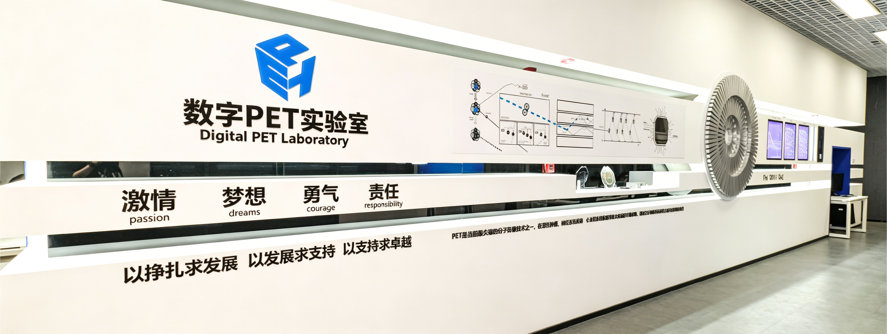

捐赠我们
支持科学研究
本团队以全数字PET科学仪器和医疗器械为主方向，研究工作覆盖从关键材料、核心器件到创新系统、前沿应用的整个创新链。以MVT方法的发明为起点，我们用二十余年的时间一步步实现了数字PET从采样原理到临床应用的创新闭环。
探索“生命起源、意识起源、宇宙起源”是团队的终极愿景。我们相信这样的努力，可能会对人类文明的发展产生无法估量、无可替代的作用。还有什么，会比这更令人痴迷和满足呢？
而您，可以不仅仅做一个旁观者！
- 对世界富有好奇心的您，可以与我们一同去绘制分子层面的代谢图谱、窥探神经网络到主观体验的跃迁、破解宇宙元事件分布的奥秘。您的捐赠，是对追寻科学真理精神的激励、是对人类踏上好奇心之旅的鼓舞。
- 对人类富有悲悯心的您，可以与我们一同去揭示癌症、脑病、罕见病等疾病的发生发展内在规律，开辟疾病诊疗与药物开发新范式。为医生在肿瘤、心脑血管疾病和神经系统等重大健康危害的早期诊断、精准治疗中提供更多工具，为生物学家在病理研究、新药开发中提供更多利器。您的捐赠，是对重大疾病从“早期可见”走向“超早期可量、可治”的助力，是让人类平均寿命得以飞跃性延长的希望。
- 对社会富有责任心的您，可以与我们一同去凝聚那些三观正直、勇于担当的热血青年，培养生医、电子、自动化、计算机、核医学、临床医学等专业的科研人才、产业精英。您的捐赠，将帮助有潜力的学生创造更多的机会、帮助有志向的青年研究人员实现抱负，为造福人类健康、探寻科学真理贡献力量！
人生如白驹过隙，您不妨加入进来，一起做一些可能永恒的事情。

科学研究与数字PET实验室以全数字PET技术创新服务人类健康的科研使命相辅相成 ——
从多电压阈值（MVT）采样与探测器物理，到成像方法，再到用于肿瘤早期诊断与精准医疗的完整临床系统 ——
通过这一完整技术链条，助力保障我国在医学成像与探测器技术领域的人才队伍始终保持领先水平。每一份投入、每一种形式，都对我们持续激励和培养学生、使其成长为新一代科学家与工程师至关重要。